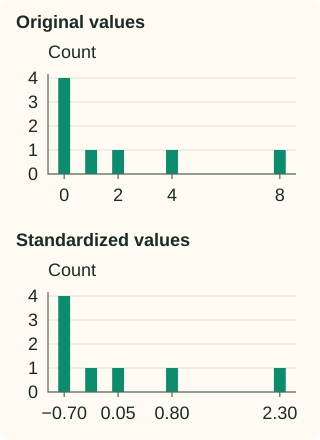

Standardization (Z-Score)
Standardization describes a value relative to a fitted center and spread. Subtract the training mean, then divide by the training standard deviation. The result, called a z-score, tells us how many fitted standard deviations the value is above or below that mean.
This is a change of location and scale. It does not turn a feature into a Gaussian distribution, remove outliers, or force future data to look like training data.
Fit the center and spread on a small reference pool
Suppose the training durations are 2, 4, 4, and 6 minutes. Their mean is (2 + 4 + 4 + 6) / 4 = 4. Subtracting 4 gives deviations −2, 0, 0, and 2.
Square those deviations and average them: (4 + 0 + 0 + 4) / 4 = 2. This is the fitted variance under the convention used here. Its square root, approximately 1.414 minutes, is the fitted standard deviation.
Write $\mu$ for the saved mean, $\sigma$ for the saved positive standard deviation, and $x$ for a value to transform. Then
For a duration of 6 minutes, the numerator is 2 minutes. Dividing by 1.414 minutes gives approximately 1.414. The units cancel, leaving a dimensionless coordinate.
Which data has mean zero and variance one?
The transformed training values are approximately −1.414, 0, 0, and 1.414. Their mean is zero and their average squared deviation is one, up to numerical precision. That is a consequence of using the same reference values to calculate the fitted statistics.
A new duration of 8 minutes becomes approximately 2.828. A new batch containing only values near 8 will not have transformed mean zero. That difference may reflect a changed population; fitting a separate scaler to the batch would erase the comparison with training.
Why divide the variance by n rather than n − 1?
With $n$ reference values, the convention here is the average squared deviation, $\sigma^2=(1/n)\sum_{i=1}^{n}(x_i-\mu)^2$. Scikit-learn uses this convention, equivalent to NumPy’s std(ddof=0).
Sample statistics courses often use ddof=1, dividing by $n-1$, when estimating a population variance. That is a different convention. For these four values it gives variance 8/3 instead of 2. Match the convention when reproducing fitted transformations; neither number should be silently substituted for the other.
The distribution’s shape does not become normal
A fixed affine transformation moves and stretches the number line. Repeated values remain repeated, their order stays the same, and a long tail remains a long tail. Here is a separate skewed sample before and after standardization:

Means and standard deviations can be sensitive to extreme observations. A large outlier can shift the fitted center and enlarge the divisor, compressing the rest of the transformed data. Robust scaling uses different reference statistics; a nonlinear distribution transform is another operation entirely.
A constant feature cannot acquire unit variance
If a training column is 7, 7, 7, 7, its variance is zero. Dividing by zero would be undefined. Scikit-learn uses a scale factor of 1 for a constant feature, so centering maps those training values to zero.
A later value of 9 then becomes 9 − 7 = 2. That is a consequence of the fallback rule, not “two estimated standard deviations” when no nonzero spread was observed. A training-constant feature also provided the model no evidence about how its variation relates to the target.
Python: preserve the fitted statistics
The first column below is the duration example; the second demonstrates the constant-column rule. Both are fitted on training rows and reused for a new row.
Inspect the means, scales, and inverse transformation
import numpy as np
from sklearn.preprocessing import StandardScaler
# First feature varies; the second is constant in training.
train = np.array([[2., 7.], [4., 7.], [4., 7.], [6., 7.]])
scaler = StandardScaler().fit(train)
print(scaler.mean_.tolist())
print(scaler.scale_.round(4).tolist())
new = np.array([[8., 9.]])
encoded = scaler.transform(new)
print(encoded.round(4).tolist())
assert np.allclose(scaler.transform(train)[:, 0].mean(), 0)
assert np.allclose(scaler.transform(train)[:, 0].std(ddof=0), 1)
assert np.allclose(scaler.inverse_transform(encoded), new)
[4.0, 7.0]
[1.4142, 1.0]
[[2.8284, 2.0]]For this invertible affine transformation, the inverse multiplies by the saved scale and adds the saved mean. Keeping those parameters and the feature order makes the conversion reversible within numerical precision.
Scaling is not imputation or decorrelation
StandardScaler ignores NaNs when fitting each feature and preserves them during transformation. It does not fill them. An entirely missing reference column has no observed center or spread; use the missing-data workflow to define its treatment.
Each column is centered and scaled independently. Correlated columns generally remain correlated. Standardization is not whitening, and it does not remove redundancy between features.
For a sparse matrix, centering turns implicit zeros into nonzero values. Use a suitable sparse-preserving policy, such as with_mean=False, when needed; that option scales without producing zero-mean columns. The sparse-scaling note explains the storage consequences.
Fit it as part of the model pipeline
Use standardization when its units suit the estimator’s distances, penalties, or optimization. The mechanisms note explains why those are different reasons to scale. A z-score is not itself a guarantee of relevance or predictive quality.
During cross-validation, fit a new scaler on each training fold. Store the final fitted scaler with the final model and transform future rows using the same statistics. Recomputing statistics at prediction time changes the model’s coordinates.
C++: fit one finite-valued feature
This teaching implementation uses a running mean and squared-deviation accumulator, avoiding the unstable subtraction of a large squared mean from a large mean square. It uses the same n-divisor convention and constant-feature fallback. It assumes finite reference values and does not implement missing-value or sample-weight support.
Compile the fitted standardizer
#include <cmath>
#include <cstddef>
#include <iomanip>
#include <iostream>
#include <stdexcept>
#include <vector>
class Standardizer {
double mean = 0, scale = 1;
public:
explicit Standardizer(const std::vector<double>& reference) {
if (reference.empty()) throw std::invalid_argument("empty reference");
double m2 = 0;
std::size_t n = 0;
for (double x : reference) {
if (!std::isfinite(x)) throw std::invalid_argument("finite values required");
++n;
const double delta = x - mean;
mean += delta / n;
m2 += delta * (x - mean);
}
const double variance = m2 / n; // ddof = 0
if (variance > 0) scale = std::sqrt(variance);
}
double transform(double x) const { return (x - mean) / scale; }
double inverse(double z) const { return z * scale + mean; }
};
int main() {
const Standardizer encoder({2, 4, 4, 6});
std::cout << std::fixed << std::setprecision(4);
for (double x : {2, 4, 6, 8})
std::cout << x << " -> " << encoder.transform(x) << "\n";
const Standardizer constant({7, 7, 7});
std::cout << "constant feature, new 9 -> " << constant.transform(9) << "\n";
}
2.0000 -> -1.4142
4.0000 -> 0.0000
6.0000 -> 1.4142
8.0000 -> 2.8284
constant feature, new 9 -> 2.0000References and further reading
- Scikit-learn: StandardScaler — saved statistics, variance convention, constant columns, missing values, and sparse options.
- NumPy: standard deviation — the divisor controlled by ddof and the meaning of the computed spread.
- Scikit-learn: standardization guide — column-wise centering and scaling in a preprocessing workflow.